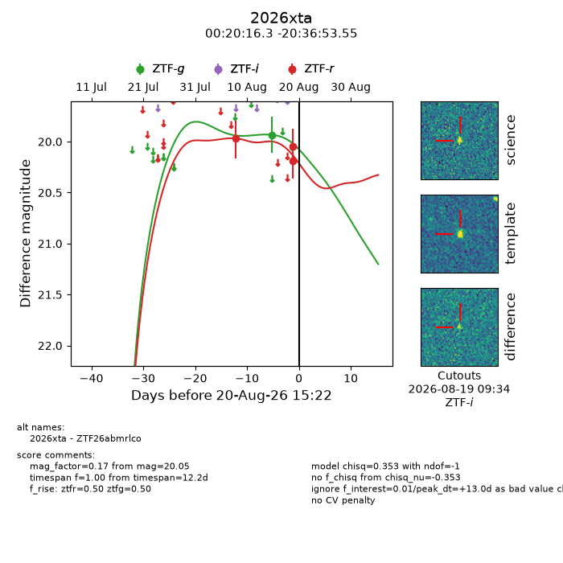
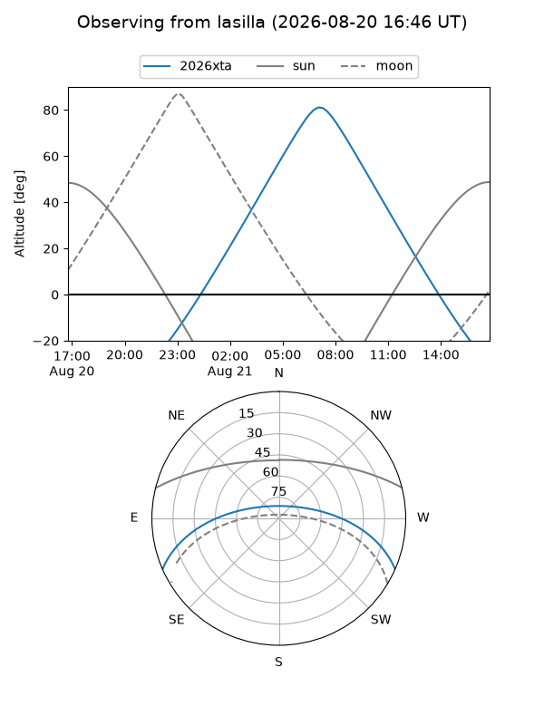
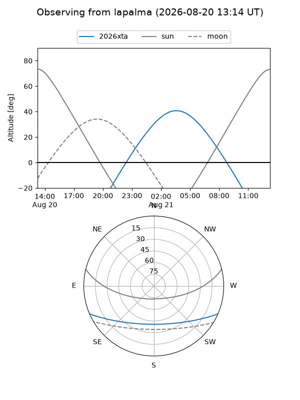
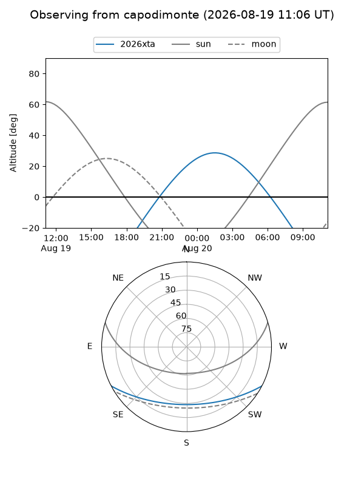
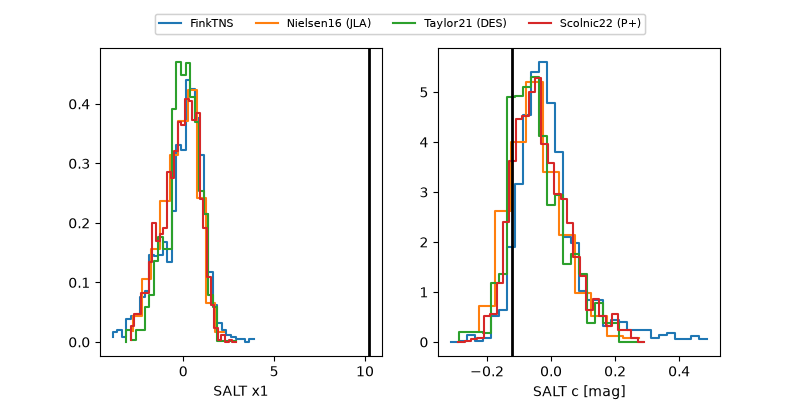

2026xta
Target 2026xta at 2026-08-20 15:25
Aliases and brokers:
FINK-ZTF: ztf.fink-portal.org/ZTF26abmrlco
Lasair-ZTF: lasair-ztf.lsst.ac.uk/objects/ZTF26abmrlco
ALeRCE-ZTF: alerce.online/object/ZTF26abmrlco
YSE-PZ: ziggy.ucolick.org/yse/transient_detail/2026xta
TNS name: wis-tns.org/object/2026xta
Direct TNS query: direct search
alt names
ZTF26abmrlco (ztf,fink_ztf)
2026xta (tns,yse)
Coordinates:
equatorial (ra, dec) = 5.0681,-20.61487
equatorial (HMS+DMS) = 00:20:16.35,-20:36:53.55
galactic (l, b) = (73.7243,-80.35179)
Flags:
TNS type: nan
peak dt: +13.0
Photometry:
last ztfg=19.93, ztfr=20.05
1 ztfg, 3 ztfr detections
Lightcurve

Visibility



Additional plots
